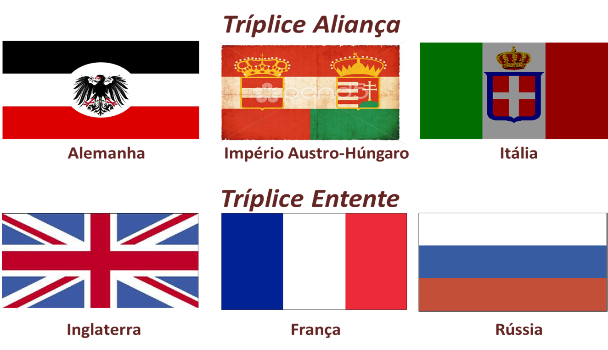

Pew pew Tratratra!! Primeira Grande Guerra!!
ciencias
O assassinato do arquiduque Francisco Ferdinando, herdeiro do Império Austro-Húngaro junto com o de sua esposa, a duquesa Sophie, é considerado o episódio decisivo para o início da Primeira Guerra Mundial. A morte deste importante personagem da política europeia ocorreu em um atentado executado a 28 de junho de 1914, em Sarajevo, atual capital da Bósnia e Herzegovina, e à época, província da Áustria-Hungria.